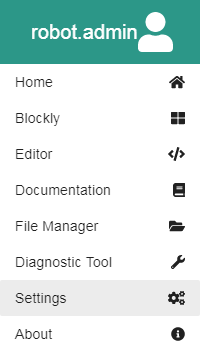

Web Interface
Program Development and operation of the Fusion System is all performed through a built-in Web-based Graphical User Interface (WebGUI). This section provides an overview of the Fusion Web Interface features and operations. It also includes links to the reference guides for the various environments you can use to develop programs or change settings on your Fusion.

Title Bar
The Title Bar is displayed on every page within the Fusion Web Interface.
Clicking on the icon in the upper left opens the Hamburger Menu.

- The top of the Hamburger menu has the name of the current logged in account. For this example we are logged in as the account named fusion.
- Home brings you back to the homepage of the Web Interface.
- Blockly brings you to the Blockly programming environment.
- Editor brings you to the Editor text-based programming environment.
- Documentation brings you to the to the Home Page of the Fusion Documentation.
- VNC brings you to a page that is currently under development. For now there is a link to download a browser extension or VNC program to connect to your fusion desktop. You must be logged in as Administrator to access this feature.
- Diagnostic Tool brings you to a the Diagnostic Tool for Fusion. Here you can run a full test on your Fusion and get vital system information.
- Settings brings your to a page where you can update the Fusion, modify wireless settings and manage users. You must be logged in as Administrator to access this feature.
- About gives you contact information about Boxlight Robotics and MyBot.
Next to the Hamburger Menu is the Fusion Page Status icon.
Clicking the Fusion icon will bring you back to the Web Interface home screen. To the right of the Fusion icon is the name of the page you are currently on.
All the way to the right side are a series of icons.
- The Battery
icon which represents the remaining battery level of the 6V Fusion Battery.
- The Internet icon informs you if you have internet connection.
- The Wireless icon
give you information about the wireless network you are connected to. This requires an addition Wi-Fi dongle or direct ethernet connection in order to access.
- The Program Details icon is either in Play
or Stop
status. Click the icon for additional details.
- The Power icon allows you to Logout, Power Off or Restart your Fusion.
Home Screen
The Home Screen gives you options to access different parts of the Fusion Web Interface.
- Build brings you to available building instructions for various Fusion kits.
- Blockly brings you to the Blockly programming environment.
- Editor brings you to the Editor text-based programming environment.
- Fusion Documentation brings you to the to the Home Page of the Fusion Documentation.
- Server This is currently not implemented.
- Settings brings your to a page where you can update the Fusion, modify wireless settings and manage users. You must be logged in as Administrator to access this feature.
Additional Help
1. Find/Connect Fusion Access Point
2. Accessing the Fusion Web Interface
3. Create a new account
4. Delete an account
5. Edit an account
6. Change Fusion Access Point SSID and Passkey
7. Restore Fusion Access Point
8. Connect to the Internet
9. Update the Fusion
10. How to use Blockly
11. How to use Editor
12. Using Autonomous Mode